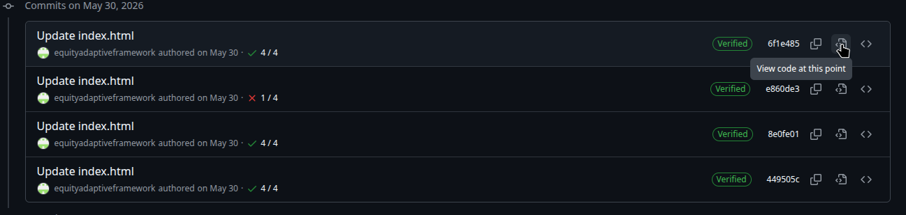

To explore past versions, open any commit under the desired date
To view the document as a whole, click on the "View code at this point" icon (as indicated below).

For plain text visibilty, download the "index.html" file by clicking on the "Download Raw File" icon (as indicated below), and open the file in your prefered web browser
Optional: To access visual enhancements found on the live version of the site, download the "style.css" file found in the Files sidebar and ensure that it is in the same directory as the "index.html" file downloaded from before.